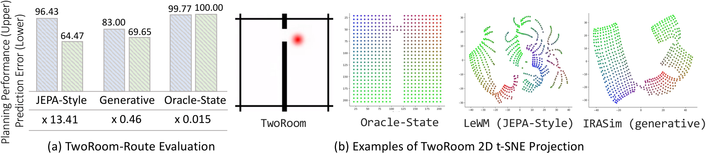

Dynamics can fail with oracle states
Removing visual abstraction does not eliminate goal-shift failure. Contact-rich variants show larger prediction-error increases and more consistent planning degradation than free-space variants.
A world model should be more than a predictor of what an expert usually does. It should model how the environment responds to actions, including actions taken for goals that were not practiced during training.
AnyGoal provides a benchmark to measure this capability, motivated by how human learners generalize from limited experience. We neither introduce a new visual factor to the problem, nor do we change the underlying dynamics of the environment. We only challenge the model's ability to reuse its knowledge compositionally from the training data.
Expert demonstrations are shaped by a goal. A robot trained to push a block toward a target, for example, usually approaches the block. A model can learn that behavioral regularity without learning the result of an arbitrary action.
Change the goal from pushing the block to avoiding it, and the environment and action space remain the same. The model must now handle state–action combinations that expert rollouts rarely visited. In Push-T, models that plan successfully for the original goal degrade sharply on Avoid-T.

Why does it happen? It is because the model is easily learning shortcut solutions that work for the original goal but fail when the goal changes. As we mentioned earlier, the agent is usually approaching the block in Push-T. Our hypothesis was that if we give an action that moves the agent away from the block when they are far away (which means strongly deviating from the expert trajectory), the model will ignore it and still predict that the agent will approach the block. We tested this hypothesis by performing an action-sensitivity analysis, which confirmed that the model is indeed ignoring actions that deviate from the expert trajectory.

Figure above shows that if the agent is far from the block, the model is way less sensitive to the action. This is observed across different scenarios. More details can be found in the paper.
Similar patterns of action ignoring are observed in la-le-worldmodel.A central question in AnyGoal is whether world models can generalize to new goals while preserving the same visual factors and underlying physical rules. This directly tests their ability to compositionally generalize across the states and actions that vary within the training dataset.

Compositional generalization is the ability to predict novel combinations of familiar components. In the figure, the combinatorial space contains all combinations of individually observed factors, while the training data cover only a subset of them. AnyGoal targets the combinatorial gap, where test combinations are unseen during training even though each factor remains within its training support.

To ensure that test tasks introduce no unseen state factors or actions, we apply three support criteria using oracle states available in simulation. A factor is considered in-distribution only if it passes all three checks.
World models train only on the original base tasks. Eight goal-shifted variants are reserved for evaluation.
| Base environment | Training goal | Unseen goals |
|---|---|---|
| TwoRoom | Navigate through a narrow passage | TR-Route |
| Push-T | Push a T-shaped block to a target pose | Avoid-T, Stack-T, Push-T Antigoal |
| Manipulator Insert-Peg | Insert a peg into a target slot | Avoid-Peg, Extract-Peg |
| OGBench Cube | Pick and place a cube | Cube-Hop, Cube-Diagonal |
Each precollected benchmark provides 400 evaluation episodes. We also provide a data collection tool with anygoal library, allowing researchers to collect more data for their own experiments.

We compare JEPA-style and generative world models with predictors that receive oracle physical states. Each model is evaluated on its base task and the corresponding AnyGoal variants.
How accurately does the model predict future transitions under supplied actions?
Can the model support action selection that reaches the new goal?
These measures are complementary: low prediction error and successful planning do not always move together.
Removing visual abstraction does not eliminate goal-shift failure. Contact-rich variants show larger prediction-error increases and more consistent planning degradation than free-space variants.
Familiar physical factors can form novel visual combinations. End-to-end models may fail where oracle-state predictors remain stable, implicating representation learning as well as dynamics.
In TwoRoom, goal-shifted observations remain visually familiar, yet end-to-end models degrade while oracle-state predictors stay stable. Familiar images need not yield a useful latent geometry.
Free-space tasks may offer many successful trajectories and tolerate imperfect predictions. Contact-rich tasks often demand more precise interaction models, so both measures are needed.

Compositional generalization requires two things: identifying action-conditioned dynamics from goal-directed trajectories, and applying those dynamics to unseen combinations. Sparse local mechanisms offer one favorable setting: a global state–action combination may be new while each local mechanism still receives familiar inputs.
This is a sufficient condition under appropriate identification and coverage assumptions, not a complete solution. Learning reusable mechanisms, discovering interaction regimes, and handling genuinely new local interactions remain open challenges.